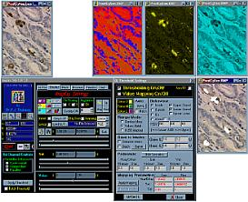
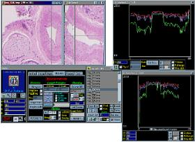
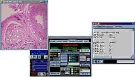
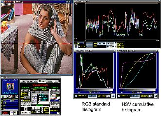

BiAlith


|
Features of BiaQIm
List of Main Features
Click here to go straight to the changes since the last release    Features Added in v2.40 cf. v2.31
Interactive measurements now include angles
The line and histograms plots have been further improved. Cumulative histograms can be plotted at will. The line plots include a memory option to store a line plot from a previous position or different image and to overlay the plot in memory with the current plot. This allows comparison of line plots before and after a certain image process for example. The plots now have quantitative axes. Z-plots have the option to spread the abscissa according to numerical file names for accurate plotting of unevenly sampled data such as in time decay series.
 Features Added in v2.41 cf. v2.40
Enhanced manual differential counter functions: Now you can save and load a counting session so you can take breaks when performing large count tasks or keep records. Furthermore you can now transfer your
counting dots to a labelled mask to perform analysis on the marked objects (e.g. nearest neighbour analysis). The interface is also improved - you cannot accidently reset the counter as in previous versions.
Batch Renaming: The renamer can now handle arbitrary (constant) step sizes in file number - the increments do not have to be in steps of 1.
3D Slicing: Grey level scaling is now applied to XZ and YZ slices when examining an image stack.
Binary processing: You can now save the distance transform separately as a raw doubles array.
The interface has been improved and some bugs in v2.40 have been fixed. There is now extended support for new versions of Biaram programs including Autoreg and Formula. For a detailed list of bug fixes and changes see the ReadMe.txt file that comes with the BiaQIm distribution.
Features Added in v2.5 cf. v2.41
Masking: Now you can save the components of a labelled mask invdividually: Boundary tracing and distance transform (grey lebel BMP), distance transform (raw doubles option) and labelled image (8bpp indexed colour). A bug that only accepted lower case '.bmp' extension imagesto be drag-dropped into M1 or M2 has been fixed. A bug in the 'Fourier Symmetricise' option for masks has been fixed.
Batch Renaming: Several new options are provided - you can strip full path names from the file names to make qfl files more portable; you can strip a list from obsolete files; the renamer now renames any .qih
files associated with the image files (previously these were ignored). The GUI has been upgraded.
3D Slicing: LUT manipulations are now shown in the XZ and YZ slices. Support for colour image slicing has been extended to allow colour separation and LUTs to be applied to colour XZ and YZ slices.
The X,Y,Z plot windows can now be effectively closed by clicking the 'x' at the top of the window.
Code upgrades: The overhauled and upgraded general Fourier transform, convolution and other processes are now included in this version
The interface has been improved and some bugs in v2.41 have been fixed. There is now extended support for new versions of Biaram programs including Autoreg v2.62, Convolution, Deconvolution (Deconvolve, DeconME, DeconLS), Fourier, Edge detection and spatial Transforms. For a detailed list of bug fixes and changes see the ReadMe.txt file that comes with the BiaQIm distribution.
Features Added in v2.6 cf. v2.51
3D Slicing: Now you can easily save the XZ or YZ slice images through a 3D stack by just double-clicking on the XZ or YZ view window.
3D Slicing: Now when you move the mouse cursor over the XZ and YZ slices the pixels values under the mouse are displayed in real time.
Staistics and display: A new button is present on the stats viewer called 'Set Display Limits' which allows you to set the min and max values for display by automatically copying the min and max values from the current statistics.
Minor GUI improvments.
Features Added in v2.8 cf. v2.6
A Euclidean distance transform replaces the old Chamfer method (this affects some shape factors e.g. Danielsson).
Arithmetic Tool Window: Single op updated to warn user of using zero value with certain ops. Dual Arithmetic process updated to include the new 'min' and 'max' options.
Filter Tool Window: Convolve now accepts qfl files for PSF and you can save the convolve settings (this provides GUI support for 3D convolution, previously only accessible via the command-line).
Deconvolve Tool Window: Updated interface to read and write Deconvolve 3.0 settings and allow parallel options (also for DeconME and DeconLS). 3D support added to the GUI.
Registration Tool Win: Interface updated to accept the automatic background option for Autoreg and to read/write v.2.63 files (only).
Reading of settings files (convolution, deconvolution, registration) are now case insensitive.
Geometry Tool Window: Updated to allow the 'AutoBg' option for non-sinc shift and scale operations.
As the GUI has been adapted to run with the latest version of the Biaram programs, you should ensure that you have the 2010 release of Biaram if you want to use external processes with BiaQIm v2.8 alpha to avoid incompatibility issues.
'Transfer' buttons have been added to the Geometry, Registration and Arithmetic tool windows that allow you to automatically transfer the RGB/HSI/value values from the edit boxes in the main QI Process tab into the corresponding boxes in these tool windows. This gets around the complicated problem of trying to use the 'picker' tool to select into those tool window boxes or the drudgery of manual copying pixel values from the edit boxes in the QI Process tab to the corresponding edit boxes in those tool windows.
On the 'Process' tab I have changed the 'Build+Run' button to 'Form + Run' (function remains the same) to let the user know this just forms the command string from whatever is in the command component edit boxes (so allows user edits through). I have changed function of the 'Build & Save' button - now this will build the command string from the internal settings (just as the 'START' button does but without running the program). Any user edits in the command component edit boxes will be ignored.
Now the stats display gets updated every time you switch views on a complex array (between Re, Im, Arg and Mod).
Stats routines can now cope with flat images i.e. images where all pixels are the same value (before they would not calculate stats or a histogram if the image was flat and gave a pop-up message).
File list ops: Made the 'Clear unreadable entries' function more robust. Now it actually checks to see if the file is readable (before, it only checked to see if there was a readable qih header file or checked the file itself only if it had an internal header. Thus if a raw datatype file went missing but its qih header still existed this function would not remove the image from the list. This is now fixed).
File list animation: The animation delay steps now increase more steeply (to allow slower frame rates). XZ and YZ views: The pixel values in the XZ and YZ planes are displayed in real-time as the mouse moves over the XZ or YZ slice currently displayed. Also, it is now easy to save the XZ or YZ slice bitmap by double-clicking on the image. Actually these two features were present in the last release but were not mentioned in the manual.
Some GUI issues have been fixed: The background colour on many text edit boxes has been changed from grey to teal to make the caret more easily visible. Wrong symbols were displayed on some of the calculator buttons depending on the computer's font set - this has been fixed. Also the name Kulpa was wrongly spelt 'Kulper' and Watanabe as 'Wanatabe' - these have been fixed.
Updated common libraries are used which give more robust error checking, make it less likely that the program with terminate without warning and fix a small memory leak that affected read/write of BMP images.
A bug in Centre-of-Mass (CoM) shape measure has been fixed.
A bug was fixed that prevented ARG and MOD of Fourier transforms from being affected by the 'original data' mappings.
A bug was fixed that prevented drag-n-drop of .dft files.
A bug was fixed that partly occluded the top-most pixel row of the displayed image in 1:1 zoom (main display and secondary display).
Some potential/actual memory problems have been fixed when checking for qih files.
A bug was fixed that read the output file name from the input batch file (rather than the output batch file) during batch processes and so would overwrite the input image (unless file name extension / modification was used).
A significant memory leak in stats routine has been fixed (it used to gobble up an image-sized array of doubles each time the stats routine was called e.g. when loading an image in centiles mode).
Features Added in v2.9 cf. v2.8
In addition to the changes described below for the BiaQIm GUI program, the latest distribution also has many upgrades to the Biaram collection and new programs added.
Added an 'Auto close' tick box (default is ticked) to the 'Other Settings and Tools' tab of the "QI File List Tool" window. This closes the window as soon as you select one of the buttons there (e.g. 'Strip to file name only').
Added a button to the calculator called 'M%'. When clicked this computes the percentage that the non-zero pixels in mask 1 are cf. the number of non-zero pixels in mask 2 (i.e. 100.0*NM1/NM2) and prints the result to input 1 or input 2 of the calculator (whichever has current focus). If NM2 is 0 then 'Infinity' is the answer. If either mask is unoccupied then a pop-up error message is shown stating that both masks must be occupied for the function to work.
Changed the License text window from a TRichEdit to a TListBox as the RichEdit control may have been responsible for blocking the GUI from running on some newer versions of Windows.
Improved the KIME thresholding function (Kittler & Illingworth Minimum Error) so it does not return a fatal error when it fails (now QI will not crash out but displays a friendly pop-up error and continues).
Now if you drag-drop a .qih file into QI it quietly ignores it. Previously it would interrupt with a pop-up error but this is not conducive to smooth loading of multiple raw images by drag-drop if your drag selection includes the .qih files.
Automatic registration GUI has been altered to allow use of XYReg as well as AutoReg.
The 'fixed-size crop box' overlay now correctly shows the size of the box (before it overshot in X and Y by 1 pixel even though the final cropping was correct in dimensions). If the crop box height or width is 1 pixel then no overlay is displayed (but this is not addressed because it should be a relatively rare user choice).
Now if your last focus was the crop box height or width edit boxes then this will be tantamount to the other crop edit boxes (before, last focus in the crop height / width boxes did not count for anything).
Features Added in the March 2024 release
When you start BiaQIm a ‘console’ type window will start with it (useful because it outputs any messages from processes run by BiaQIm and can help greatly is debugging any problems, for example when a process does not run as you expect it to).
I altered the GUI interface to display well on WINE in Linux as well as Windows.
The license window and help box text have been updated to reflect the use of the GNU GPL v3.0 license of the current open source release.
I added a central marker circle to the ‘Micro Display’ (used in high zoom mode) window to indicate to the user which is the current pixel the mouse is over.
A new ‘angle indicator’ has been added to the main image window overlay and the micro display. This follows the mouse pointer and shows the direction angle of the underlying pixel (for images where pixel value represents some angle like phase or hue).
A new boundary treatment option has been added to the Deconvolution tool window – the ‘Balanced’ (or ‘BB’) method i.e. the method of Bertero & Boccacci.
I changed the multiplication symbol to 'x' in the relevant option for 'formula' and 'cxformula' (BiaQIm no longer uses '*').
I updated the Cepstrate options (in the ‘PSF Estimation’ tool window) to fit the latest version of that program.
The internal stats for regions and measurements are now stored in variables of size ‘double’ (double precision floating point) instead of ‘long double’ as before. This is because BiaQIm compiles with a size of 8 bytes for a double (which is quite ‘standard’ and widespread amongst computers at the time of updating this manual as it was 30 years ago when BiaQIm was first written) but the ‘long double’ is represented by 10 bytes in BiaQIm and this is much less ‘standard’ in modern computers. This affects the size of data written to and read from the .qrm files used to save combined mask and measurements data so any qrm files generated by previous versions of BiaQIm may no longer be compatible with the current version. I have also taken the opportunity to add new features to the .qrm file and so only this new format (v2.0) is read and written by BiaQIm, older formats will be rejected.
BUG FIX: The annoying problem of BiaQIm appearing to ‘hang’ on some newer versions of MS Windows has be fixed.
BUG FIX: I use the very latest updated tsam code with bug fixes and improvements.
BUG FIX: I fixed bugs in the Micro Display high zoom viewer which meant the zoomed image you were seeing was not properly centred on where your mouse was over the main image. Now the image is properly centred and it reports the correct pixel values when in this mode.
BUG FIX: The Micro Display high zoom image now updates in real time when you draw some overlay on the image (before you had to move the mouse to update it).
BUG FIX: I fixed the bug that did not accept FITS files if their extension was '.fits' instead of '.fit'.
BUG FIX: Some issues where the program changed the case of file names and file paths when it reads them have been fixed so it does not do this.
BUG FIX: Fixed GUI behaviour when loading or viewing modulus and argument data – this involved ensuring the label next to the box that displays the mod or arg values is properly updated to show ‘Md’ or ‘Ag’ when in those modes (it did not always do this before).
BUG FIX: Potential segmentation fault bug fixed in the Euclidean distance transform function.
BUG FIX: Bugs fixed in the routine to read .qrm files.
Copyright |
 Dr P. J. Tadrous 2000-2026
Dr P. J. Tadrous 2000-2026